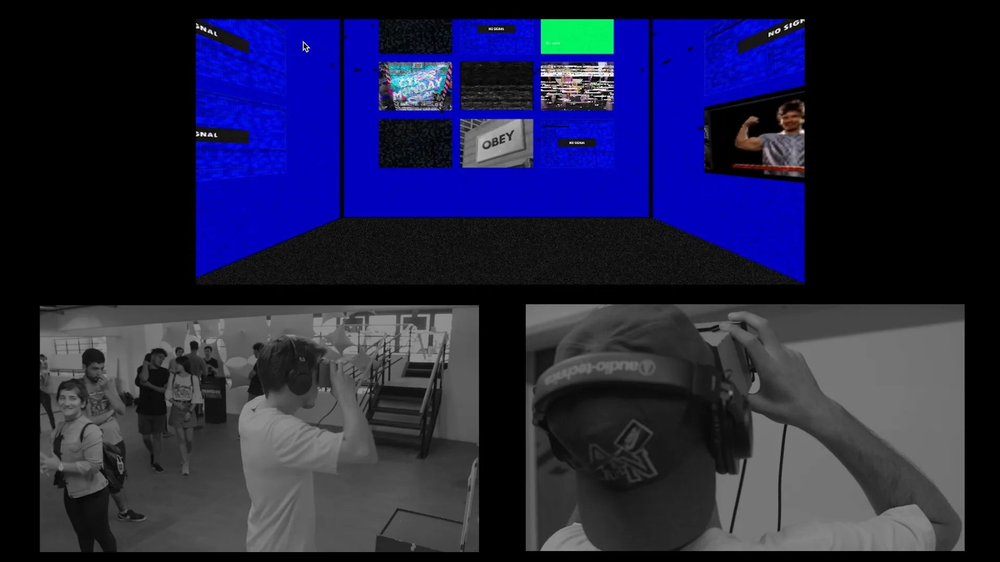
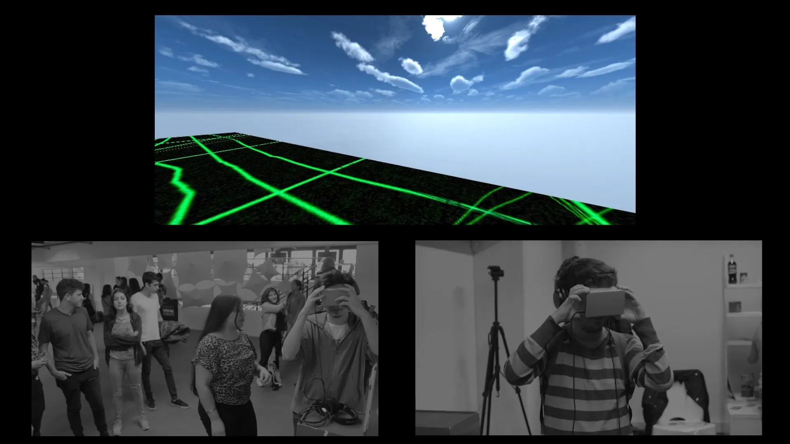

00:00:04:00Arte · Instalación interactiva
Control
Una instalación interactiva de realidad virtual, pensada como obra abierta que cada visitante completa.
- Categoría
- Instalación interactiva
- Año
- 2023
- Herramientas
- Virtual reality
Este proyecto gira en torno a una instalación interactiva de realidad virtual que proponemos como obra abierta: cada persona la vive de una forma distinta, según su propia interpretación.
Aprovechando lo inmersivo e interactivo de la realidad virtual, la instalación busca llevar a quien la usa a otra realidad, donde pueda relacionarse con la obra de un modo personal y significativo.
A través de distintos estímulos sensoriales, de lo táctil a lo mental, la instalación busca despertar respuestas emocionales y cognitivas, desde reacciones viscerales inmediatas hasta una reflexión más lenta y contemplativa.
En definitiva, queremos crear una experiencia dinámica y transformadora que deje huella y que invite a vincularse con el arte de maneras nuevas.




Siguiente en ArteImagen con IA
Alter Ego →